Day 1 - Arrival and Waikiki Beach
We landed on Oʻahu in the afternoon, and I took a couple of photos at the airport before our trip really began. After leaving the airport, we went to Ala Moana to pick up our rental car. We had missed lunch, so we grabbed some musubi and snacks. It felt good to finally sit down and eat after traveling.
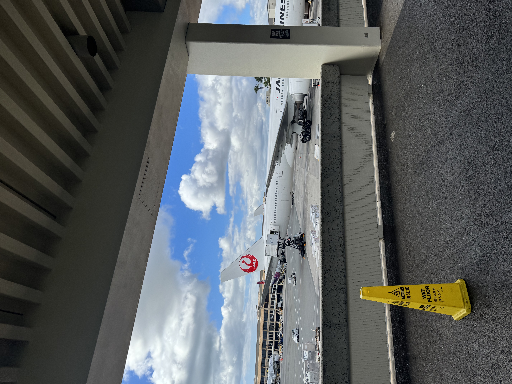
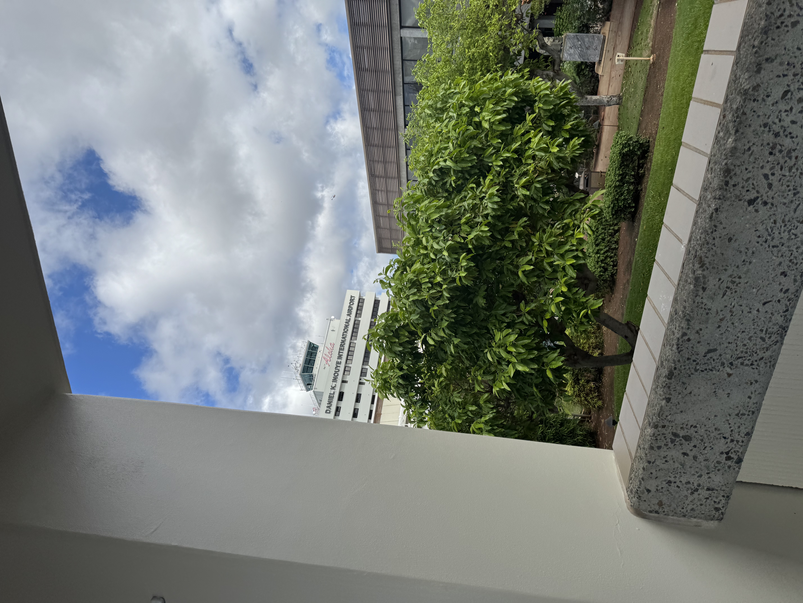
Later, we drove to Waikīkī to enjoy the sun and take photos by the water. Seeing the ocean and Diamond Head made the first day feel real at last. That evening, we wandered through some shops near Waikīkī Beach before heading back to rest.
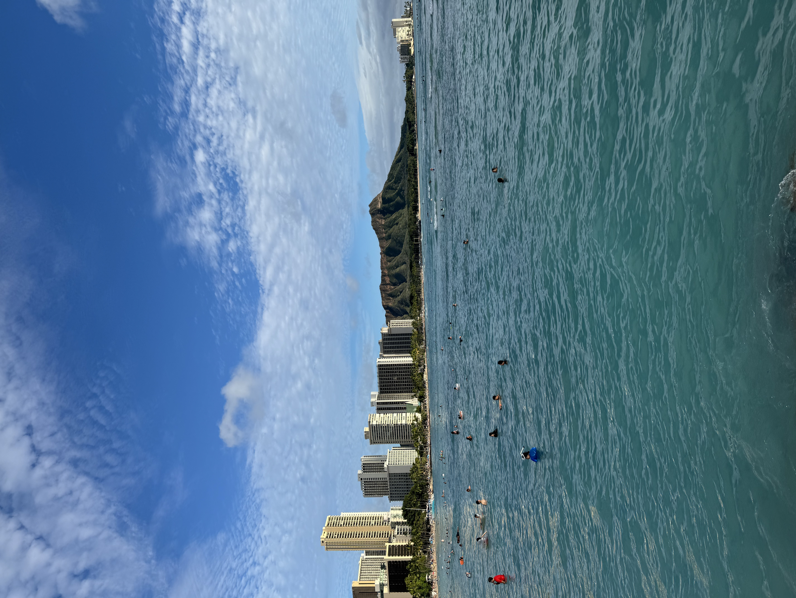
Day 2 - Breakfast and Pineapples
The next morning, we ate at Island Vintage Coffee. We ordered an ube bagel, a savory rice-and-egg dish, and a mango smoothie. The bagel’s purple color made it especially fun to photograph, and sitting down together for breakfast was a lovely way to begin the day.
After breakfast, we drove to Dole Plantation. We tried a bowl of fresh pineapple and pineapple ice cream, then looked around for souvenirs. The pineapple tasted especially fresh, and the whole stop put me in such a good mood.
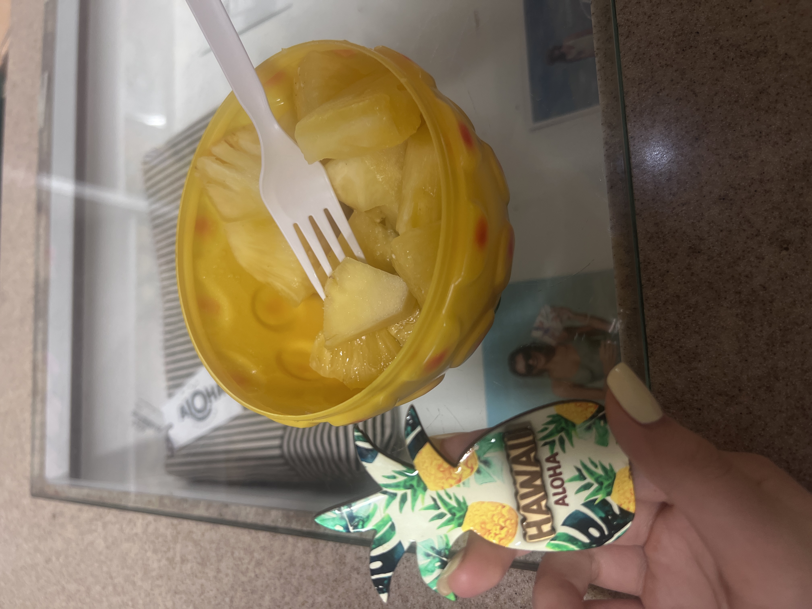
In the evening, we went to Ala Moana Center for teppanyaki. The flames rising from the grill were exciting to watch, and the food smelled amazing. It was a delicious end to an already happy day.
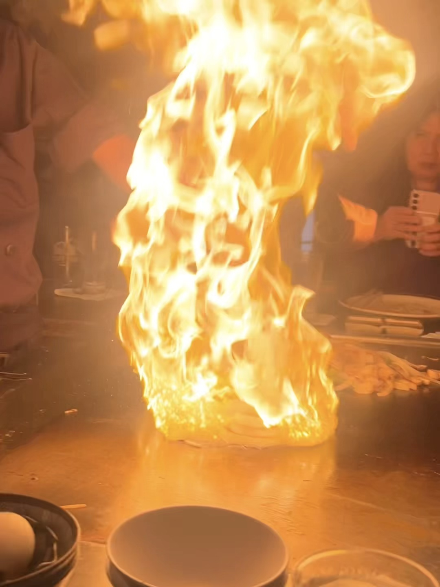
Day 3 - Musubi, Pearl Harbor, and Udon
We took the morning slowly and went to Musubi Cafe. We bought a whole tray of different musubi and had fun trying them together. After tasting so many kinds, I still thought the classic one was the best.
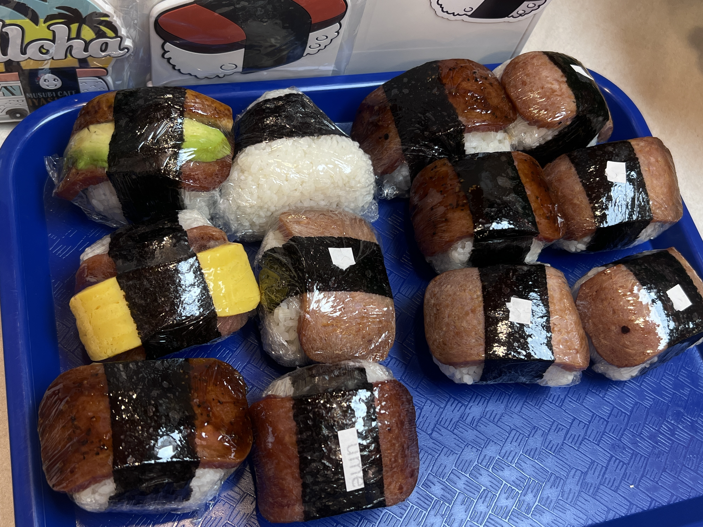
After our relaxed morning, we visited Pearl Harbor and the USS Missouri. I learned that the attack on Pearl Harbor on December 7, 1941, brought the United States into World War II. Japan’s formal surrender was signed aboard the USS Missouri in 1945. Seeing the ship and its enormous guns made that history feel much closer. It was an eye-opening visit, and I left feeling that I had learned a lot.
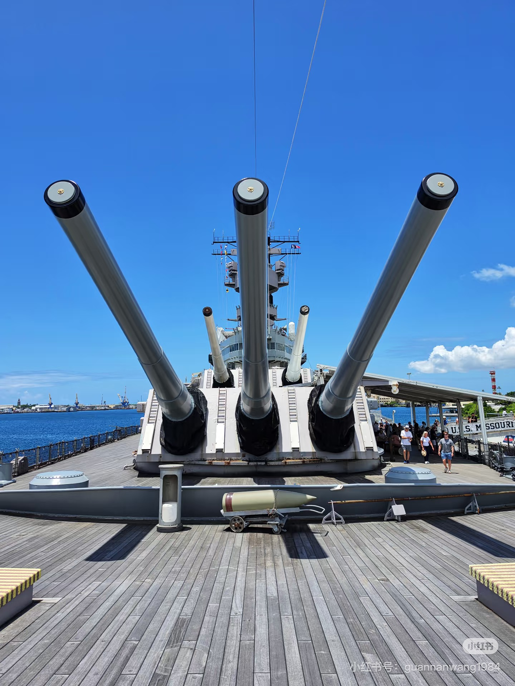
That evening, my girlfriend, our friend, and I went to Marugame Udon in Waikīkī. We ordered so many different bowls of udon that our table was nearly full. The tempura had just come out of the fryer when I reached it in line, so it was especially crisp, and the udon was wonderfully smooth and springy. After waiting about half an hour, we agreed the meal was worth it.
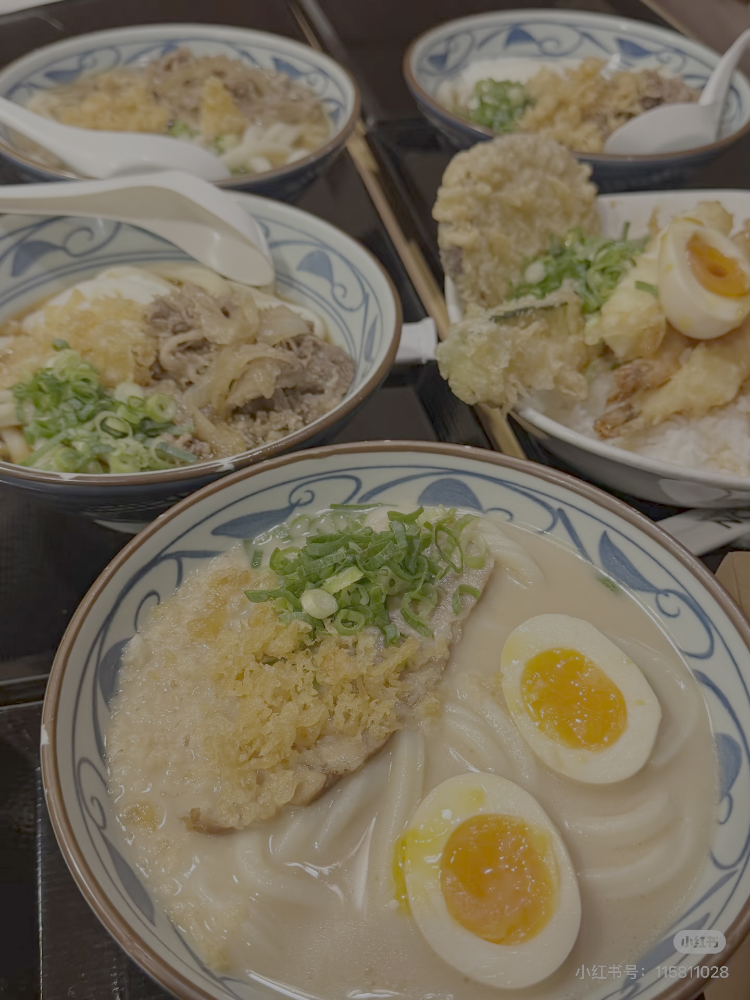
Day 4 - Kualoa Ranch and Secret Island
On day four, we drove from Waikīkī to Kualoa Ranch. I had booked a little late, so some of the other tours were already full. We chose the full-day Secret Island experience, which turned out to be a lovely mix of activities and time to relax.
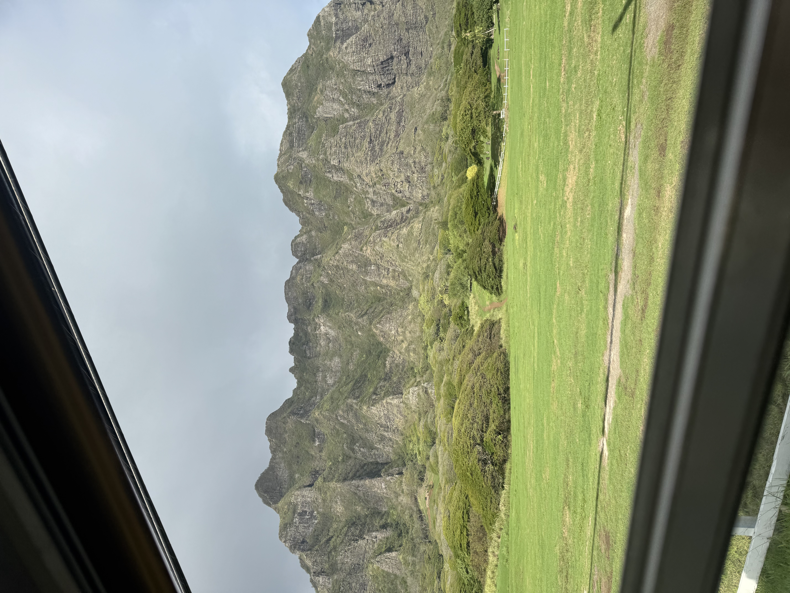
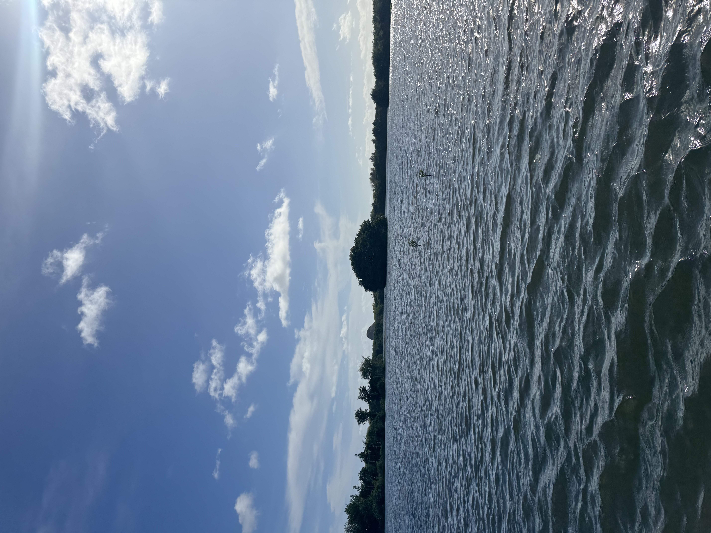
| Time | Activity |
|---|---|
| 10:30 a.m. | Stand-up paddleboarding |
| 11:00 a.m. | Boat ride to look for turtles |
| 1:30 p.m. | Canoe to the sandbar |
| 2:30 p.m. | Pond tour |
The full-day tour included lunch, but it was probably the least exciting part of the day. We had a cold chicken sandwich, some chips, and fruit. It was enough to keep us going, although I honestly didn’t enjoy it very much.
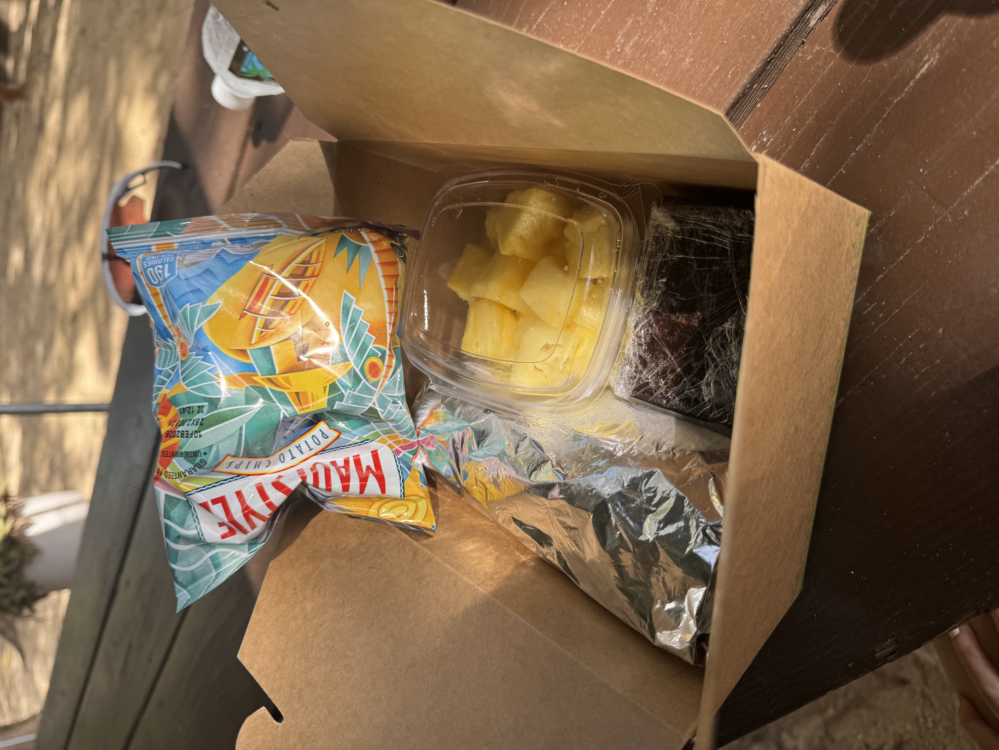
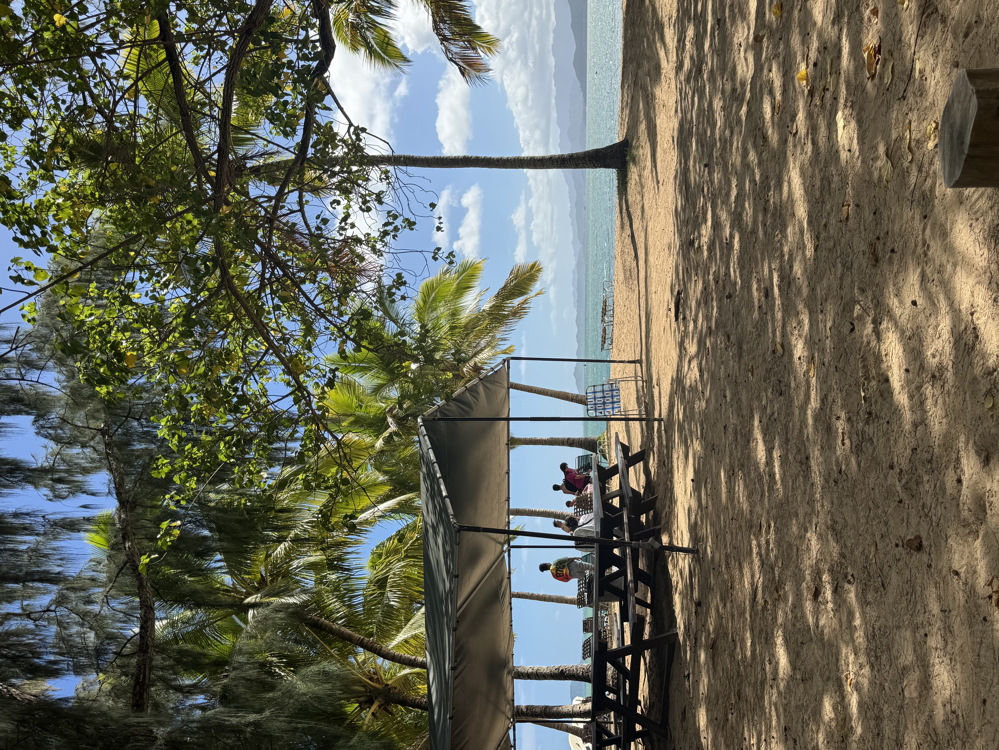
Even though lunch was disappointing, the scenery and activities made the day unforgettable. By the time we got back from Kualoa Ranch, we were exhausted. We picked up a simple dinner from the 7-Eleven across from our hotel, went back to our room, and called it a night.
Day 5 - Turtle Beach and a Rainbow
After four full days of exploring Oʻahu, our fifth day was also our last. We didn’t schedule any tours. We simply drove toward Turtle Beach on the North Shore, ready to slow down and enjoy the final day of our trip.
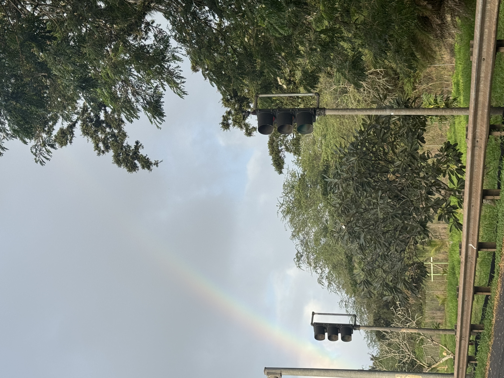
At Turtle Beach, we did very little, and that was exactly what we needed. We spent some quiet time there, letting everyday stress fade and enjoying the last moments of our trip. I’ve always believed that seeing a rainbow brings good luck, so the one we spotted on the drive felt especially meaningful. If you’re reading this, I hope a little of that luck finds its way to you, too.
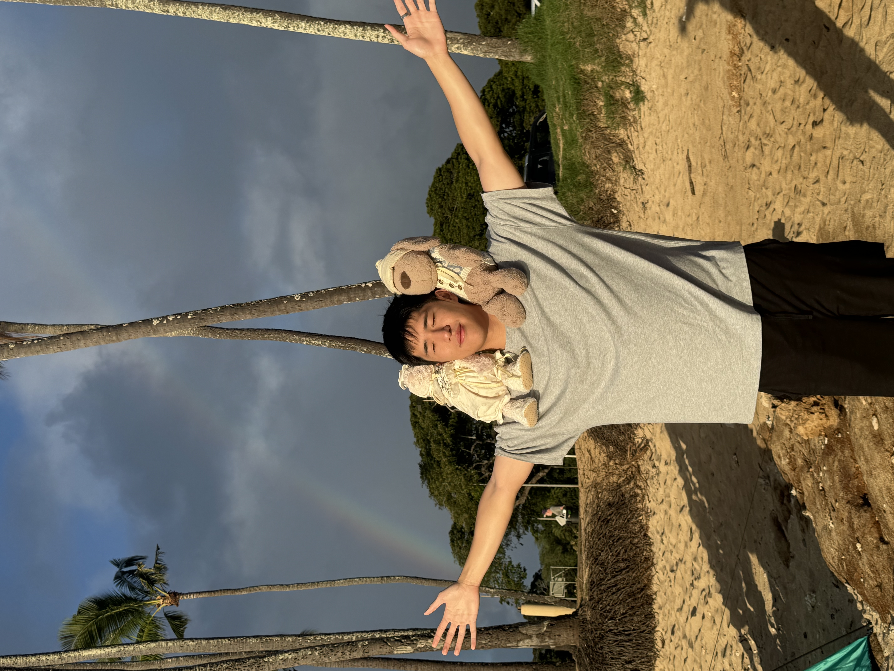
Until Next Time, O'ahu
Five days on Oʻahu went by much too quickly. We ate so much good food, tried new things, and still found moments to slow down by the water. The trip was full, fun, and genuinely refreshing. I keep thinking about the fresh pineapple, the crispy tempura, the quiet beach, and that rainbow on our last day.
There is so much more of the island I want to see, so I’m already planning to come back this Christmas. For now, I’m taking home the photos, the memories, and the feeling that five days was only the beginning.